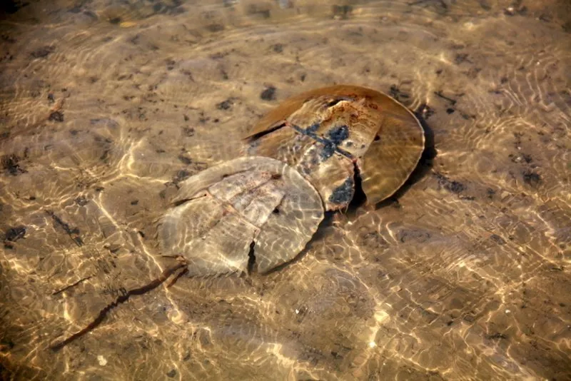

其他无脊椎动物 · 动物界
圆尾鲎 Carcinoscorpius rotundicauda

体型较小的鲎类，尾剑圆而短，生活在东南亚红树林和泥滩，体内含河豚毒素，不可食用，也是保护动物。
- 分类
- 门节肢动物门纲肢口纲目剑尾目科鲎科属圆尾鲎属
- 栖息环境
- 东南亚红树林、泥滩和河口，夜间活动
- 地理分布
- 东南亚和南亚沿海，包括泰国、马来西亚和印度尼西亚
- 保护级别
- 暂无评估；受栖息地破坏和过度捕捉威胁
物种志
圆尾鲎体长约 30–40 cm，明显小于中国鲎，头胸甲呈马蹄形，背面光滑，尾剑短而圆，横截面近圆形，因此得名；体色多为暗褐或灰褐色。它属于节肢动物门肢口纲，是鲎科中体型较小的种类。
它生活在东南亚的红树林、泥滩和河口，夜间活动，取食蠕虫、贝类、小鱼和腐肉。圆尾鲎最需要注意的是它体内可能含有河豚毒素，毒性很强，误食可致命，因此不能食用，也不要用它泡酒或做药。它分布于东南亚和南亚沿海，包括泰国、马来西亚、印度尼西亚和中国南部部分海域。由于栖息地破坏和过度捕捉，圆尾鲎的种群受到威胁，被列为保护动物，观赏和科研用途也应遵守相关规定。
形态与习性
- 食性取食蠕虫、贝类、小鱼和腐肉
- 体长约 30–40 cm，明显小于中国鲎
- 识别尾剑短而圆，横截面近圆形
- 毒性体内可能含河豚毒素，误食可致命
- 栖息红树林、泥滩和河口，夜间活动
- 保护受栖息地破坏和过度捕捉威胁
趣味知识
- 圆尾鲎的尾剑又短又圆，是它区别于中国鲎的重要特征。
- 它体内可能含有河豚毒素，绝对不能食用或泡酒。
- 到东南亚红树林旅游时，不要随意捕捉或购买圆尾鲎。